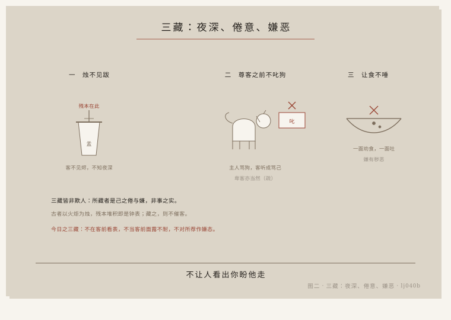

曲礼上 · 一·四十二 · 第 40 课
这一节讲三件客前之戒：烛烧尽了不见残本；尊客在堂不叱狗；让食时不吐。
说什么事：烛不见跋；尊客之前不叱狗；让食不唾。
落在哪一层：教。上节讲三起，这节讲三不：不显夜深、不显倦、不显嫌。
为何编在此位：起是「事到」，不显是「事过」；一进一藏，客礼乃全。
【经】燭不見跋。尊客之前不叱狗。讓食不唾。
跋 郑注：「跋，本也。烛尽则去之，嫌若烬多有厌倦。」疏引《小尔雅》：「跋，本也。本，把处也。」
烛 疏：「古者未有蜡烛，唯呼火炬为烛也。火炬照夜易尽，尽则藏所然残本。」
不叱狗 郑注：「主人于尊客之前不敢倦，嫌若风去之。」疏：「叱骂于狗，则似厌倦其客欲去之。」
让食不唾 郑注：「嫌有秽恶。」
烛烧尽不要把残本留着让人看见。尊客在堂，不叱骂狗。让人进食时不吐口水。
三条都在「藏」：藏夜深，藏倦意，藏嫌恶。客礼的高处，不在多做，在不让人看出你盼他走。
第一层 烛不见跋：用一支烛计算时间 疏说得最实：「若积聚残本，客见之，则知夜深，虑主人厌倦，或欲辞退也。」——堆着的烛头是钟表。礼的办法是「恒如然未尽」：让客人以为还早。
第二层 此条的深处是不欺 不显夜深，不是骗客人时辰，是不把「我倦了」的证据摆在案上。今日宾主看表、看手机，与此同类：都是无声的逐客令。
第三层 不叱狗：怒气不落在旁人身上 郑注「嫌若风去之」：主人骂狗，客人听成骂己。疏再加一句：「卑客亦当然，举尊为甚。」——此礼通于一切来客。
第四层 让食不唾：不让人看见你的嫌 「让食」是劝食；一面劝人吃，一面吐，是把嫌弃显出来。此条最琐，也最见礼的性格：礼不管你好恶，只管你显不显。
与今日何干 今日待客，多的是当面看表、语音抱怨、手机刷屏。此节给的三「藏」，可直用：不在客前看时辰，不当客前面露不耐，不对客所荐之物作嫌态。
| 左 | 右 |
|---|---|
| 烛不见跋 | 跋，本也；嫌若烬多有厌倦 |
| 藏残本，恒如未尽 | 不使客知夜深 |
| 尊客之前不叱狗 | 嫌若风去之 |
| 让食不唾 | 嫌有秽恶 |
画一案：案角一只铜烛台，烛已短，烛本被收在一只小陶盂里，盂盖半掩；案下地面一柄竹帚，帚头朝墙；案前摆着一只盖碗，碗盖斜搁。不画人，不写文字。赭色只在烛台与盂口。
